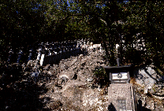
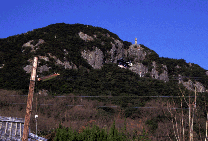
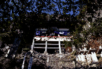
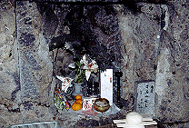
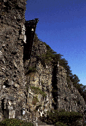
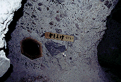
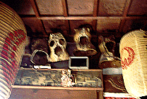
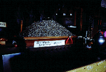
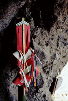

笠ヶ滝寺/香川県土庄町
 
年の瀬だというのに春のような陽気の小豆島。私は飯島直子が（多分チューブ前田と）厄よけ指輪を買ったという笠ヶ滝寺へと向かっていた。暖かいせいで心身ともに弛みきっている状態におあつらえ向きの軟弱スポット・・・のはずだった。
車はゆるゆると田舎道を走る。幾らか登り加減のようだ。ふと山の上を見る。え、あの山のてっぺんにあるのが笠ヶ滝寺？何かやけに遠くねえか、などと思っている内に道は段々と狭く急な上り坂になってくる。レンタカーの軽乗用車の限界とも思える坂をやっと登り切ったところで駐車場に着いた。
上を見上げる。この時、私の中では軟弱スポットのレッテルは完全に剥がれ落ちた。なぜなら本堂に到る境内の全容がわかったからである。本堂は駐車場より数十メートル上の急斜面に懸造形式で建っている。そしてその本堂に到るまでの道程は急な岩場なのである。巣鴨あたりで地蔵さんを洗っている婆さん達などにはとても登ることの出来ない寺なのだ。
  
岩場は真ん中に鎖が渡してあるだけで日頃山登りなどに縁の無い私にとっては結構ハードだった。汗が出てくる。「ファイトおおおお」「いっっぱああああああっつ」の世界だ。
足場の悪い岩場を登る事約10分、やっと本堂の真下にまで来ると今度は洞窟である。真っ暗な洞窟は中でふたてに別れ、左は行き止まりで大黒さんが祀ってあった（真っ暗だがライトで確認）。そして右側はヘアピンカーブ状になっておりそこをショートカットするように60センチ程の小さな穴があけられている。いわゆる厄よけくぐりで、その穴を抜けると梯子状の階段が見えてくる。本堂だ。

階段を昇るとそこは本堂の中で、ここまでの道程が嘘のように年老いた坊さんが座っている。静かな光景だ。
本堂の奥は岩壁になっておりそこに本尊が祀られている。そしてその前には指輪が山の様に積まれていた。どういったシステムかは良くわからないがペンチが置いてあるところをみるとここで指輪を買って、後にここに古い指輪を奉納するらしい。飯島直子、あんたもここまで来たのか、エライよ。
で、何気なく欄間を見上げてギョッとした。そこには多数の古いコルセットが架けられているのだ。腰痛除けなのだろうか、一緒に奉納されている写真とあいまってあまりにも生々しい感じがした。
  
行きと同じ道を辿って駐車場へ。そこに張り紙があったのに気が付く。正月に地元のテレビ局が中継をするらしい。カメラマンとか堪んねえだろうなあ。
1998.12
2011.再訪しました。再訪記
珍寺大道場 HOME